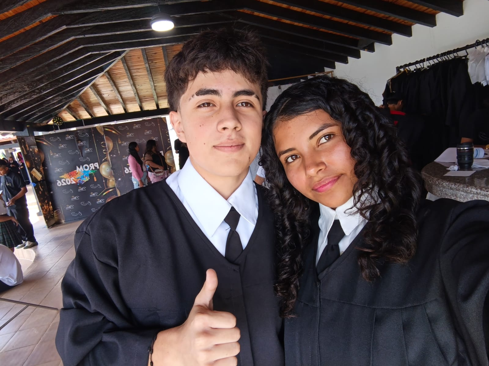

01
Mis pasiones
Me gusta jugar fútbol y voleibol. Son actividades que disfruto y que me ayudan a mantenerme activa, compartir con otras personas y aprender a trabajar en equipo.

Un poco sobre mí
Soy una persona apasionada por lo que me gusta. Disfruto aprender, descubrir nuevas ideas y trabajar para construir un futuro que me haga sentir orgullosa.
01
Me gusta jugar fútbol y voleibol. Son actividades que disfruto y que me ayudan a mantenerme activa, compartir con otras personas y aprender a trabajar en equipo.
02
Quiero seguir estudiando agricultura o gastronomía. Me gustaría especializarme cada vez más para desarrollar mis habilidades y llegar lejos en el futuro.
03
Me interesa la programación y la tecnología en general. Me gusta la idea de crear aplicaciones y desarrollar proyectos digitales que puedan ser útiles para otras personas.
04
Me gusta la agricultura y quisiera estudiar y trabajar en ese campo. Me interesan las plantas y todo lo relacionado con su cuidado; espero crecer en esta área y alcanzar mis metas.
05
Me gustan las matemáticas y la educación física. Considero que ambas pueden ayudarme en la agricultura: las matemáticas para planificar y calcular, y la educación física para desarrollar fortaleza y constancia.
Hablemos
Si quieres comunicarte conmigo para conversar sobre mis intereses o proyectos, puedes escribirme por correo electrónico: agrega aquí tu dirección de correo.